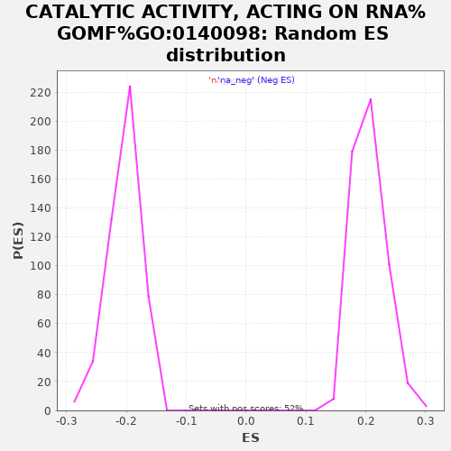

| | | Dataset | rankedList |
| Phenotype | NoPhenotypeAvailable |
| Upregulated in class | na_neg |
| GeneSet | CATALYTIC ACTIVITY, ACTING ON RNA%GOMF%GO:0140098 |
| Enrichment Score (ES) | -0.52626985 |
| Normalized Enrichment Score (NES) | -2.5905073 |
| Nominal p-value | 0.0 |
| FDR q-value | 0.0 |
| FWER p-Value | 0.0 |
Table: GSEA Results Summary
 Fig 1: Enrichment plot: CATALYTIC ACTIVITY, ACTING ON RNA%GOMF%GO:0140098
Fig 1: Enrichment plot: CATALYTIC ACTIVITY, ACTING ON RNA%GOMF%GO:0140098
Profile of the Running ES Score & Positions of GeneSet Members on the Rank Ordered List
| PROBE | GENE SYMBOL | GENE_TITLE | RANK IN GENE LIST | RANK METRIC SCORE | RUNNING ES | CORE ENRICHMENT | | 1 | SLFN14 | | | 18 | 0.981 | 0.0167 | No |
| 2 | RCL1 | | | 217 | 0.554 | 0.0162 | No |
| 3 | NSUN3 | | | 252 | 0.530 | 0.0239 | No |
| 4 | REXO2 | | | 283 | 0.501 | 0.0313 | No |
| 5 | HRSP12 | | | 373 | 0.441 | 0.0345 | No |
| 6 | AGO2 | | | 485 | 0.381 | 0.0355 | No |
| 7 | BRIP1 | | | 547 | 0.356 | 0.0387 | No |
| 8 | DHX40 | | | 590 | 0.338 | 0.0426 | No |
| 9 | POP7 | | | 920 | 0.263 | 0.0299 | No |
| 10 | CNOT6 | | | 1298 | 0.216 | 0.0138 | No |
| 11 | POLR2I | | | 1382 | 0.209 | 0.0132 | No |
| 12 | FBLL1 | | | 1504 | 0.200 | 0.0104 | No |
| 13 | DHX29 | | | 1962 | 0.173 | -0.0107 | No |
| 14 | PAPD4 | | | 2210 | 0.160 | -0.0209 | No |
| 15 | TERT | | | 2276 | 0.157 | -0.0215 | No |
| 16 | DDX6 | | | 2471 | 0.150 | -0.0291 | No |
| 17 | DCP2 | | | 2614 | 0.144 | -0.0340 | No |
| 18 | IGHMBP2 | | | 2855 | 0.136 | -0.0443 | No |
| 19 | MOV10L1 | | | 3195 | 0.126 | -0.0599 | No |
| 20 | DGCR8 | | | 3311 | 0.123 | -0.0638 | No |
| 21 | DDX3X | | | 3396 | 0.120 | -0.0661 | No |
| 22 | NT5C3A | | | 3508 | 0.117 | -0.0699 | No |
| 23 | XRN1 | | | 3691 | 0.113 | -0.0775 | No |
| 24 | PUS1 | | | 3825 | 0.110 | -0.0825 | No |
| 25 | PTRH1 | | | 4292 | 0.099 | -0.1054 | No |
| 26 | POLR3C | | | 4375 | 0.097 | -0.1080 | No |
| 27 | MED21 | | | 4656 | 0.091 | -0.1212 | No |
| 28 | EXOSC6 | | | 4815 | 0.088 | -0.1280 | No |
| 29 | ERN1 | | | 4842 | 0.087 | -0.1278 | No |
| 30 | CCRN4L | | | 4909 | 0.085 | -0.1298 | No |
| 31 | DDX49 | | | 5034 | 0.083 | -0.1348 | No |
| 32 | DHX34 | | | 5037 | 0.083 | -0.1335 | No |
| 33 | RNASE7 | | | 5053 | 0.083 | -0.1328 | No |
| 34 | RPP25 | | | 5132 | 0.081 | -0.1354 | No |
| 35 | RNASE13 | | | 5560 | 0.072 | -0.1567 | No |
| 36 | ERN2 | | | 5582 | 0.071 | -0.1566 | No |
| 37 | ENDOV | | | 5773 | 0.067 | -0.1654 | No |
| 38 | TRPT1 | | | 5966 | 0.064 | -0.1744 | No |
| 39 | POLR2E | | | 5976 | 0.064 | -0.1738 | No |
| 40 | NUDT16 | | | 6028 | 0.063 | -0.1753 | No |
| 41 | TSEN2 | | | 6076 | 0.062 | -0.1767 | No |
| 42 | USB1 | | | 6216 | 0.059 | -0.1830 | No |
| 43 | DDX51 | | | 6242 | 0.058 | -0.1833 | No |
| 44 | ALKBH5 | | | 6254 | 0.058 | -0.1828 | No |
| 45 | DDX19A | | | 6410 | 0.055 | -0.1900 | No |
| 46 | PAN3 | | | 6454 | 0.055 | -0.1913 | No |
| 47 | TRMT61A | | | 6544 | 0.053 | -0.1951 | No |
| 48 | PARS2 | | | 6659 | 0.051 | -0.2002 | No |
| 49 | PTRHD1 | | | 6708 | 0.050 | -0.2018 | No |
| 50 | POLR2A | | | 6722 | 0.050 | -0.2016 | No |
| 51 | TRMT1L | | | 6848 | 0.047 | -0.2074 | No |
| 52 | RNASET2 | | | 6930 | 0.046 | -0.2108 | No |
| 53 | PIF1 | | | 6961 | 0.045 | -0.2116 | No |
| 54 | EXO1 | | | 6984 | 0.045 | -0.2120 | No |
| 55 | KIAA1456 | | | 7072 | 0.043 | -0.2158 | No |
| 56 | DUS1L | | | 7103 | 0.043 | -0.2166 | No |
| 57 | POLR2K | | | 7246 | 0.040 | -0.2234 | No |
| 58 | NUDT16L1 | | | 7451 | 0.036 | -0.2336 | No |
| 59 | DDX60L | | | 7512 | 0.034 | -0.2361 | No |
| 60 | SLU7 | | | 7735 | 0.030 | -0.2473 | No |
| 61 | HELZ2 | | | 7750 | 0.030 | -0.2475 | No |
| 62 | DTD1 | | | 7878 | 0.028 | -0.2538 | No |
| 63 | CRCP | | | 8122 | 0.023 | -0.2662 | No |
| 64 | CD3EAP | | | 8128 | 0.023 | -0.2661 | No |
| 65 | DHX32 | | | 8273 | 0.020 | -0.2733 | No |
| 66 | TSEN34 | | | 8337 | 0.019 | -0.2763 | No |
| 67 | RTCA | | | 8386 | 0.018 | -0.2785 | No |
| 68 | ISG20 | | | 8424 | 0.017 | -0.2802 | No |
| 69 | ZC3H12A | | | 8488 | 0.016 | -0.2832 | No |
| 70 | SARS2 | | | 8528 | 0.016 | -0.2850 | No |
| 71 | BCDIN3D | | | 8607 | 0.014 | -0.2888 | No |
| 72 | PARN | | | 8721 | 0.012 | -0.2946 | No |
| 73 | ERI1 | | | 8776 | 0.011 | -0.2973 | No |
| 74 | EARS2 | | | 8791 | 0.011 | -0.2978 | No |
| 75 | PNLDC1 | | | 8817 | 0.011 | -0.2989 | No |
| 76 | PRIMPOL | | | 8908 | 0.008 | -0.3036 | No |
| 77 | METTL2A | | | 9005 | 0.007 | -0.3085 | No |
| 78 | POLR2L | | | 9014 | 0.007 | -0.3088 | No |
| 79 | KARS | | | 9293 | 0.001 | -0.3235 | No |
| 80 | ENDOU | | | 9309 | 0.001 | -0.3243 | No |
| 81 | FDXACB1 | | | 9710 | -0.007 | -0.3453 | No |
| 82 | METTL8 | | | 9788 | -0.008 | -0.3493 | No |
| 83 | EXOSC4 | | | 9795 | -0.008 | -0.3494 | No |
| 84 | ENDOG | | | 9996 | -0.012 | -0.3598 | No |
| 85 | LRRC47 | | | 10134 | -0.014 | -0.3668 | No |
| 86 | TARS | | | 10333 | -0.019 | -0.3769 | No |
| 87 | DDX59 | | | 10343 | -0.019 | -0.3771 | No |
| 88 | TGS1 | | | 10345 | -0.019 | -0.3768 | No |
| 89 | PRIM1 | | | 10404 | -0.020 | -0.3795 | No |
| 90 | RNASEH2A | | | 10441 | -0.021 | -0.3810 | No |
| 91 | DDX28 | | | 10530 | -0.022 | -0.3853 | No |
| 92 | FEN1 | | | 10585 | -0.023 | -0.3877 | No |
| 93 | ELAC1 | | | 10732 | -0.026 | -0.3950 | No |
| 94 | JMJD6 | | | 10805 | -0.028 | -0.3983 | No |
| 95 | POLRMT | | | 10991 | -0.032 | -0.4075 | No |
| 96 | TSEN54 | | | 11036 | -0.033 | -0.4092 | No |
| 97 | GARS | | | 11160 | -0.035 | -0.4151 | No |
| 98 | YARS | | | 11213 | -0.036 | -0.4172 | No |
| 99 | RNASE8 | | | 11236 | -0.037 | -0.4177 | No |
| 100 | ZNRD1 | | | 11378 | -0.040 | -0.4245 | No |
| 101 | XRN2 | | | 11447 | -0.041 | -0.4273 | No |
| 102 | TRMT12 | | | 11549 | -0.043 | -0.4319 | No |
| 103 | RNASEK | | | 11628 | -0.044 | -0.4352 | No |
| 104 | ZCCHC6 | | | 11635 | -0.044 | -0.4348 | No |
| 105 | SND1 | | | 11647 | -0.045 | -0.4345 | No |
| 106 | FARSA | | | 11665 | -0.045 | -0.4346 | No |
| 107 | DUS4L | | | 11685 | -0.045 | -0.4348 | No |
| 108 | TRMT2A | | | 11721 | -0.046 | -0.4358 | No |
| 109 | POLR3H | | | 11772 | -0.047 | -0.4376 | No |
| 110 | POLR2B | | | 11876 | -0.050 | -0.4422 | No |
| 111 | DCPS | | | 11909 | -0.050 | -0.4430 | No |
| 112 | ISY1 | | | 11941 | -0.051 | -0.4437 | No |
| 113 | SKIV2L | | | 11944 | -0.051 | -0.4429 | No |
| 114 | DALRD3 | | | 12211 | -0.057 | -0.4559 | No |
| 115 | DDX54 | | | 12286 | -0.059 | -0.4588 | No |
| 116 | MEPCE | | | 12307 | -0.060 | -0.4588 | No |
| 117 | HENMT1 | | | 12326 | -0.060 | -0.4586 | No |
| 118 | RRNAD1 | | | 12341 | -0.061 | -0.4583 | No |
| 119 | TFB2M | | | 12439 | -0.063 | -0.4623 | No |
| 120 | EIF4A2 | | | 12516 | -0.065 | -0.4651 | No |
| 121 | DUS3L | | | 12518 | -0.065 | -0.4640 | No |
| 122 | TRMT10B | | | 12616 | -0.067 | -0.4680 | No |
| 123 | HARS2 | | | 12640 | -0.067 | -0.4680 | No |
| 124 | RNASE3 | | | 12655 | -0.068 | -0.4675 | No |
| 125 | TRMT44 | | | 12704 | -0.069 | -0.4688 | No |
| 126 | RNASEH2B | | | 12752 | -0.070 | -0.4700 | No |
| 127 | TDP2 | | | 12757 | -0.070 | -0.4690 | No |
| 128 | FTSJ2 | | | 12779 | -0.070 | -0.4688 | No |
| 129 | DHX58 | | | 12918 | -0.074 | -0.4748 | No |
| 130 | PIWIL4 | | | 12962 | -0.074 | -0.4758 | No |
| 131 | RNMTL1 | | | 12987 | -0.075 | -0.4757 | No |
| 132 | ICT1 | | | 13013 | -0.076 | -0.4756 | No |
| 133 | MOV10 | | | 13036 | -0.076 | -0.4754 | No |
| 134 | VARS | | | 13045 | -0.077 | -0.4745 | No |
| 135 | DDX55 | | | 13085 | -0.077 | -0.4751 | No |
| 136 | DICER1 | | | 13166 | -0.079 | -0.4779 | No |
| 137 | DHX37 | | | 13332 | -0.083 | -0.4852 | No |
| 138 | MARS2 | | | 13583 | -0.089 | -0.4968 | No |
| 139 | RPP40 | | | 13727 | -0.093 | -0.5027 | No |
| 140 | POLR2F | | | 13729 | -0.093 | -0.5011 | No |
| 141 | POLR2J3 | | | 13737 | -0.093 | -0.4998 | No |
| 142 | POLR3E | | | 13847 | -0.095 | -0.5038 | No |
| 143 | TYW1 | | | 13942 | -0.097 | -0.5071 | No |
| 144 | ANG | | | 13957 | -0.098 | -0.5060 | No |
| 145 | POLR2C | | | 13999 | -0.099 | -0.5064 | No |
| 146 | ERI3 | | | 14067 | -0.100 | -0.5082 | No |
| 147 | DDX58 | | | 14177 | -0.103 | -0.5121 | No |
| 148 | FAM103A1 | | | 14186 | -0.103 | -0.5107 | No |
| 149 | POLR2J | | | 14204 | -0.104 | -0.5097 | No |
| 150 | RPP14 | | | 14209 | -0.104 | -0.5080 | No |
| 151 | EXOSC9 | | | 14316 | -0.106 | -0.5117 | No |
| 152 | EXOSC1 | | | 14347 | -0.107 | -0.5114 | No |
| 153 | DDX39A | | | 14393 | -0.108 | -0.5118 | No |
| 154 | CNOT6L | | | 14467 | -0.110 | -0.5137 | No |
| 155 | THUMPD2 | | | 14491 | -0.111 | -0.5129 | No |
| 156 | DHX33 | | | 14564 | -0.113 | -0.5147 | No |
| 157 | METTL2B | | | 14656 | -0.115 | -0.5175 | No |
| 158 | DARS2 | | | 14711 | -0.116 | -0.5182 | No |
| 159 | UPF1 | | | 14764 | -0.117 | -0.5189 | No |
| 160 | DDX21 | | | 14789 | -0.118 | -0.5180 | No |
| 161 | FARSB | | | 14911 | -0.121 | -0.5222 | No |
| 162 | POLR1B | | | 14928 | -0.122 | -0.5209 | No |
| 163 | POLR2G | | | 14947 | -0.122 | -0.5197 | No |
| 164 | TFB1M | | | 15073 | -0.125 | -0.5240 | Yes |
| 165 | DDX52 | | | 15112 | -0.126 | -0.5238 | Yes |
| 166 | QTRTD1 | | | 15120 | -0.127 | -0.5218 | Yes |
| 167 | POLR3G | | | 15130 | -0.127 | -0.5200 | Yes |
| 168 | QTRT1 | | | 15141 | -0.128 | -0.5183 | Yes |
| 169 | WARS | | | 15142 | -0.128 | -0.5160 | Yes |
| 170 | FTSJ1 | | | 15188 | -0.129 | -0.5160 | Yes |
| 171 | DBR1 | | | 15206 | -0.129 | -0.5146 | Yes |
| 172 | SLFN11 | | | 15229 | -0.130 | -0.5135 | Yes |
| 173 | MED20 | | | 15251 | -0.130 | -0.5122 | Yes |
| 174 | DHX16 | | | 15264 | -0.131 | -0.5105 | Yes |
| 175 | GATC | | | 15303 | -0.131 | -0.5102 | Yes |
| 176 | POLR3B | | | 15353 | -0.133 | -0.5104 | Yes |
| 177 | WARS2 | | | 15360 | -0.133 | -0.5083 | Yes |
| 178 | RNASEH1 | | | 15372 | -0.133 | -0.5065 | Yes |
| 179 | CPSF3 | | | 15373 | -0.133 | -0.5041 | Yes |
| 180 | IARS2 | | | 15385 | -0.134 | -0.5023 | Yes |
| 181 | WDR4 | | | 15405 | -0.134 | -0.5009 | Yes |
| 182 | SARS | | | 15426 | -0.135 | -0.4995 | Yes |
| 183 | TRMT2B | | | 15427 | -0.135 | -0.4971 | Yes |
| 184 | TSN | | | 15441 | -0.135 | -0.4953 | Yes |
| 185 | PCIF1 | | | 15467 | -0.136 | -0.4942 | Yes |
| 186 | FTSJ3 | | | 15487 | -0.136 | -0.4928 | Yes |
| 187 | TUT1 | | | 15496 | -0.137 | -0.4907 | Yes |
| 188 | C7orf60 | | | 15503 | -0.137 | -0.4886 | Yes |
| 189 | DHX38 | | | 15573 | -0.139 | -0.4897 | Yes |
| 190 | DDX19B | | | 15599 | -0.139 | -0.4886 | Yes |
| 191 | RNASEL | | | 15600 | -0.140 | -0.4860 | Yes |
| 192 | LACTB2 | | | 15632 | -0.141 | -0.4852 | Yes |
| 193 | AGO1 | | | 15651 | -0.141 | -0.4836 | Yes |
| 194 | PPP1R8 | | | 15684 | -0.142 | -0.4827 | Yes |
| 195 | DDX31 | | | 15732 | -0.143 | -0.4826 | Yes |
| 196 | CNOT8 | | | 15738 | -0.144 | -0.4803 | Yes |
| 197 | RPAP1 | | | 15755 | -0.144 | -0.4786 | Yes |
| 198 | RARS | | | 15798 | -0.145 | -0.4782 | Yes |
| 199 | RPP38 | | | 15811 | -0.146 | -0.4762 | Yes |
| 200 | RPP21 | | | 15817 | -0.146 | -0.4738 | Yes |
| 201 | POLR3GL | | | 15837 | -0.146 | -0.4722 | Yes |
| 202 | TRMT112 | | | 15895 | -0.148 | -0.4726 | Yes |
| 203 | EXD2 | | | 15917 | -0.149 | -0.4710 | Yes |
| 204 | TRMT5 | | | 15977 | -0.151 | -0.4714 | Yes |
| 205 | RAD54B | | | 16004 | -0.151 | -0.4701 | Yes |
| 206 | IFIH1 | | | 16039 | -0.152 | -0.4691 | Yes |
| 207 | RNASE2 | | | 16085 | -0.153 | -0.4688 | Yes |
| 208 | ALKBH1 | | | 16147 | -0.155 | -0.4692 | Yes |
| 209 | DHX8 | | | 16150 | -0.155 | -0.4665 | Yes |
| 210 | YBEY | | | 16160 | -0.156 | -0.4642 | Yes |
| 211 | AARS2 | | | 16186 | -0.157 | -0.4627 | Yes |
| 212 | NARS | | | 16194 | -0.157 | -0.4603 | Yes |
| 213 | MTFMT | | | 16247 | -0.159 | -0.4601 | Yes |
| 214 | NOP2 | | | 16285 | -0.160 | -0.4592 | Yes |
| 215 | METTL15 | | | 16308 | -0.161 | -0.4575 | Yes |
| 216 | EDC3 | | | 16318 | -0.161 | -0.4551 | Yes |
| 217 | CMTR2 | | | 16321 | -0.161 | -0.4523 | Yes |
| 218 | POLR2D | | | 16325 | -0.161 | -0.4495 | Yes |
| 219 | EXOSC5 | | | 16326 | -0.161 | -0.4466 | Yes |
| 220 | METTL3 | | | 16339 | -0.162 | -0.4444 | Yes |
| 221 | DDX5 | | | 16376 | -0.164 | -0.4433 | Yes |
| 222 | VARS2 | | | 16395 | -0.164 | -0.4413 | Yes |
| 223 | PTGES3L-AARSD1 | | | 16427 | -0.165 | -0.4400 | Yes |
| 224 | CNOT7 | | | 16434 | -0.165 | -0.4373 | Yes |
| 225 | TRDMT1 | | | 16445 | -0.166 | -0.4349 | Yes |
| 226 | METTL16 | | | 16487 | -0.167 | -0.4340 | Yes |
| 227 | ANGEL2 | | | 16492 | -0.168 | -0.4312 | Yes |
| 228 | POP5 | | | 16519 | -0.168 | -0.4296 | Yes |
| 229 | METTL1 | | | 16545 | -0.169 | -0.4279 | Yes |
| 230 | TARSL2 | | | 16551 | -0.169 | -0.4251 | Yes |
| 231 | ELAC2 | | | 16552 | -0.169 | -0.4221 | Yes |
| 232 | EIF4A1 | | | 16566 | -0.170 | -0.4197 | Yes |
| 233 | DIS3L2 | | | 16571 | -0.170 | -0.4169 | Yes |
| 234 | POP1 | | | 16594 | -0.170 | -0.4150 | Yes |
| 235 | DDX17 | | | 16597 | -0.171 | -0.4120 | Yes |
| 236 | POLR1A | | | 16622 | -0.171 | -0.4102 | Yes |
| 237 | TRMT61B | | | 16629 | -0.172 | -0.4074 | Yes |
| 238 | NOB1 | | | 16631 | -0.172 | -0.4044 | Yes |
| 239 | TWISTNB | | | 16643 | -0.172 | -0.4019 | Yes |
| 240 | PTRH2 | | | 16669 | -0.173 | -0.4001 | Yes |
| 241 | PUS10 | | | 16679 | -0.174 | -0.3974 | Yes |
| 242 | DDX46 | | | 16697 | -0.174 | -0.3952 | Yes |
| 243 | DROSHA | | | 16710 | -0.175 | -0.3927 | Yes |
| 244 | CNOT1 | | | 16730 | -0.175 | -0.3905 | Yes |
| 245 | POLR3K | | | 16748 | -0.176 | -0.3883 | Yes |
| 246 | ISG20L2 | | | 16766 | -0.177 | -0.3860 | Yes |
| 247 | WBSCR22 | | | 16775 | -0.177 | -0.3832 | Yes |
| 248 | NSUN2 | | | 16778 | -0.177 | -0.3801 | Yes |
| 249 | POLR3D | | | 16780 | -0.178 | -0.3770 | Yes |
| 250 | METTL6 | | | 16786 | -0.178 | -0.3741 | Yes |
| 251 | CARS | | | 16831 | -0.179 | -0.3732 | Yes |
| 252 | AARS | | | 16842 | -0.180 | -0.3705 | Yes |
| 253 | PNPT1 | | | 16856 | -0.180 | -0.3679 | Yes |
| 254 | C9orf156 | | | 16910 | -0.183 | -0.3674 | Yes |
| 255 | TRNT1 | | | 16921 | -0.183 | -0.3647 | Yes |
| 256 | POLR3A | | | 16975 | -0.185 | -0.3642 | Yes |
| 257 | EXOSC7 | | | 16994 | -0.186 | -0.3618 | Yes |
| 258 | DDX60 | | | 16999 | -0.186 | -0.3587 | Yes |
| 259 | THUMPD3 | | | 17050 | -0.188 | -0.3579 | Yes |
| 260 | EXOG | | | 17054 | -0.188 | -0.3547 | Yes |
| 261 | MARS | | | 17067 | -0.189 | -0.3519 | Yes |
| 262 | RNASE1 | | | 17078 | -0.189 | -0.3491 | Yes |
| 263 | POP4 | | | 17079 | -0.189 | -0.3457 | Yes |
| 264 | ANGEL1 | | | 17139 | -0.192 | -0.3453 | Yes |
| 265 | SNRNP200 | | | 17143 | -0.192 | -0.3420 | Yes |
| 266 | SAMHD1 | | | 17152 | -0.192 | -0.3390 | Yes |
| 267 | TRIT1 | | | 17157 | -0.192 | -0.3358 | Yes |
| 268 | TRMT10C | | | 17165 | -0.193 | -0.3327 | Yes |
| 269 | MRPL44 | | | 17171 | -0.193 | -0.3295 | Yes |
| 270 | ALKBH8 | | | 17179 | -0.193 | -0.3264 | Yes |
| 271 | TRMT1 | | | 17207 | -0.194 | -0.3243 | Yes |
| 272 | DDX41 | | | 17276 | -0.198 | -0.3243 | Yes |
| 273 | EXOSC10 | | | 17282 | -0.198 | -0.3211 | Yes |
| 274 | DHX9 | | | 17306 | -0.199 | -0.3187 | Yes |
| 275 | HELQ | | | 17307 | -0.199 | -0.3151 | Yes |
| 276 | LCMT2 | | | 17342 | -0.200 | -0.3133 | Yes |
| 277 | AGO3 | | | 17354 | -0.201 | -0.3103 | Yes |
| 278 | NSUN6 | | | 17377 | -0.201 | -0.3078 | Yes |
| 279 | CMTR1 | | | 17385 | -0.202 | -0.3046 | Yes |
| 280 | DDX20 | | | 17443 | -0.204 | -0.3039 | Yes |
| 281 | KIAA0391 | | | 17451 | -0.204 | -0.3006 | Yes |
| 282 | DHX57 | | | 17454 | -0.204 | -0.2971 | Yes |
| 283 | DDX56 | | | 17531 | -0.208 | -0.2973 | Yes |
| 284 | ZCCHC4 | | | 17554 | -0.209 | -0.2947 | Yes |
| 285 | ALKBH3 | | | 17556 | -0.209 | -0.2910 | Yes |
| 286 | DDX27 | | | 17557 | -0.209 | -0.2873 | Yes |
| 287 | AQR | | | 17559 | -0.209 | -0.2836 | Yes |
| 288 | YARS2 | | | 17599 | -0.211 | -0.2818 | Yes |
| 289 | YTHDC2 | | | 17637 | -0.212 | -0.2800 | Yes |
| 290 | POLR1E | | | 17648 | -0.213 | -0.2767 | Yes |
| 291 | DARS | | | 17683 | -0.215 | -0.2746 | Yes |
| 292 | TYW3 | | | 17697 | -0.215 | -0.2714 | Yes |
| 293 | PUS3 | | | 17701 | -0.216 | -0.2677 | Yes |
| 294 | SMG6 | | | 17777 | -0.219 | -0.2677 | Yes |
| 295 | PRIM2 | | | 17779 | -0.219 | -0.2639 | Yes |
| 296 | TYW5 | | | 17786 | -0.220 | -0.2602 | Yes |
| 297 | RARS2 | | | 17804 | -0.220 | -0.2572 | Yes |
| 298 | PRPF18 | | | 17835 | -0.222 | -0.2548 | Yes |
| 299 | DDX10 | | | 17844 | -0.223 | -0.2512 | Yes |
| 300 | DDX42 | | | 17869 | -0.224 | -0.2484 | Yes |
| 301 | DDX50 | | | 17883 | -0.225 | -0.2451 | Yes |
| 302 | SKIV2L2 | | | 17890 | -0.225 | -0.2413 | Yes |
| 303 | ZCCHC11 | | | 17892 | -0.225 | -0.2374 | Yes |
| 304 | POLR1C | | | 17928 | -0.227 | -0.2351 | Yes |
| 305 | TARS2 | | | 17960 | -0.229 | -0.2326 | Yes |
| 306 | NSUN4 | | | 17978 | -0.230 | -0.2294 | Yes |
| 307 | METTL14 | | | 17991 | -0.231 | -0.2259 | Yes |
| 308 | G3BP1 | | | 18019 | -0.232 | -0.2231 | Yes |
| 309 | CARS2 | | | 18025 | -0.233 | -0.2192 | Yes |
| 310 | POLR3F | | | 18036 | -0.233 | -0.2156 | Yes |
| 311 | DHX30 | | | 18060 | -0.235 | -0.2125 | Yes |
| 312 | CNOT2 | | | 18067 | -0.235 | -0.2086 | Yes |
| 313 | DTD2 | | | 18073 | -0.236 | -0.2046 | Yes |
| 314 | EIF4A3 | | | 18075 | -0.236 | -0.2005 | Yes |
| 315 | RBMX2 | | | 18107 | -0.239 | -0.1978 | Yes |
| 316 | EMG1 | | | 18159 | -0.242 | -0.1961 | Yes |
| 317 | MRM1 | | | 18165 | -0.243 | -0.1920 | Yes |
| 318 | SUPV3L1 | | | 18211 | -0.247 | -0.1900 | Yes |
| 319 | DDX39B | | | 18255 | -0.250 | -0.1878 | Yes |
| 320 | QARS | | | 18300 | -0.253 | -0.1856 | Yes |
| 321 | FARS2 | | | 18319 | -0.254 | -0.1819 | Yes |
| 322 | RPP30 | | | 18330 | -0.255 | -0.1779 | Yes |
| 323 | TARBP1 | | | 18348 | -0.257 | -0.1742 | Yes |
| 324 | DHX15 | | | 18357 | -0.257 | -0.1700 | Yes |
| 325 | SLFN13 | | | 18389 | -0.260 | -0.1669 | Yes |
| 326 | DDX24 | | | 18396 | -0.261 | -0.1626 | Yes |
| 327 | DUS2 | | | 18398 | -0.261 | -0.1579 | Yes |
| 328 | DDX23 | | | 18409 | -0.261 | -0.1538 | Yes |
| 329 | TSNAX | | | 18419 | -0.262 | -0.1495 | Yes |
| 330 | EXOSC3 | | | 18423 | -0.263 | -0.1450 | Yes |
| 331 | DHX35 | | | 18487 | -0.269 | -0.1434 | Yes |
| 332 | CDKAL1 | | | 18490 | -0.270 | -0.1387 | Yes |
| 333 | FANCM | | | 18491 | -0.270 | -0.1338 | Yes |
| 334 | DDX1 | | | 18510 | -0.272 | -0.1299 | Yes |
| 335 | TOE1 | | | 18527 | -0.273 | -0.1258 | Yes |
| 336 | DIMT1 | | | 18556 | -0.276 | -0.1223 | Yes |
| 337 | FTO | | | 18557 | -0.276 | -0.1174 | Yes |
| 338 | DHX36 | | | 18576 | -0.278 | -0.1133 | Yes |
| 339 | LARS2 | | | 18588 | -0.279 | -0.1089 | Yes |
| 340 | DDX18 | | | 18630 | -0.284 | -0.1060 | Yes |
| 341 | APEX1 | | | 18663 | -0.288 | -0.1025 | Yes |
| 342 | TRMT6 | | | 18672 | -0.288 | -0.0977 | Yes |
| 343 | PAN2 | | | 18704 | -0.294 | -0.0941 | Yes |
| 344 | IARS | | | 18741 | -0.299 | -0.0906 | Yes |
| 345 | POLR2H | | | 18750 | -0.299 | -0.0857 | Yes |
| 346 | NARS2 | | | 18784 | -0.304 | -0.0819 | Yes |
| 347 | FBL | | | 18790 | -0.306 | -0.0767 | Yes |
| 348 | PDE12 | | | 18797 | -0.307 | -0.0715 | Yes |
| 349 | TRMT13 | | | 18798 | -0.307 | -0.0660 | Yes |
| 350 | DIS3L | | | 18827 | -0.311 | -0.0619 | Yes |
| 351 | DIS3 | | | 18831 | -0.312 | -0.0564 | Yes |
| 352 | EPRS | | | 18847 | -0.315 | -0.0516 | Yes |
| 353 | DDX47 | | | 18887 | -0.325 | -0.0478 | Yes |
| 354 | HARS | | | 18900 | -0.327 | -0.0425 | Yes |
| 355 | RNMT | | | 18914 | -0.330 | -0.0373 | Yes |
| 356 | EXOSC8 | | | 18949 | -0.340 | -0.0330 | Yes |
| 357 | RTCB | | | 18964 | -0.344 | -0.0275 | Yes |
| 358 | LARS | | | 19037 | -0.367 | -0.0247 | Yes |
| 359 | TRMT11 | | | 19059 | -0.378 | -0.0190 | Yes |
| 360 | RNASE6 | | | 19073 | -0.386 | -0.0128 | Yes |
| 361 | EXOSC2 | | | 19097 | -0.399 | -0.0068 | Yes |
| 362 | DDX3Y | | | 19124 | -0.421 | -0.0006 | Yes |
| 363 | QRSL1 | | | 19132 | -0.427 | 0.0067 | Yes |
Table: GSEA details [plain text format]

Fig 2: CATALYTIC ACTIVITY, ACTING ON RNA%GOMF%GO:0140098: Random ES distribution
Gene set null distribution of ES for CATALYTIC ACTIVITY, ACTING ON RNA%GOMF%GO:0140098